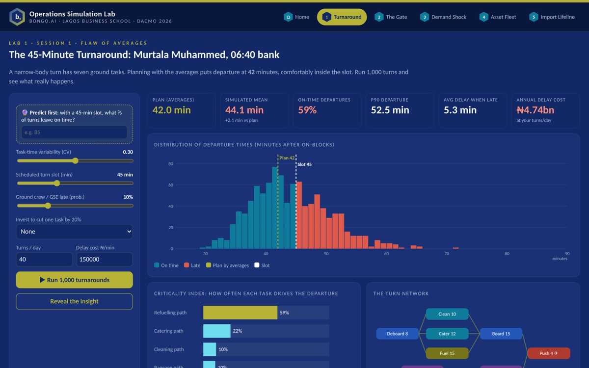

1
The Flaw of Averages
The 45-Minute Turnaround
06:40 at Murtala Muhammed. Seven ground tasks, three in parallel. The plan says 42 minutes. Run 1,000 turns and find which task really drives delay.
Most rooms guess 85–95% on time. The simulation says about 61%.
SAHCO · Aero Contractors · Pilgrims Africa